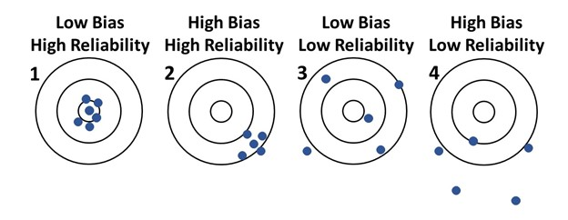

Sources of Variation - Factors and Conditions
Types of Factors
Once the response variable is determined, it is important to identify all possible factors and conditions that could influence the data measurements. Factors are often referred to as explanatory variables because they explain the variation in the response variable. They are also called independent variables since the response variable is thought to depend on the value of the factor. For each factor you identify, determine how you want it to influence your experiment. List those factors that you will be controlling during the experiment. List those factors and conditions that you will purposely hold constant. List those factors and conditions that you cannot control and determine if the values of those factors can be measured or not. Each of these lists will now be discussed in further detail.
Factors Controlled During the Experiment
These factors are of high importance because the experiment is specifically designed to determine if each controlled factor is influencing the data values. When you decide to control a factor, you must then decide which groups (or values) will be tested for that factor. These groups are called levels. It is important to remember that samples need to be taken at each level, so a reasonable, but not overwhelming, number of levels should be included, somewhere from 2 to 8 levels.
One level of the factor to consider is a control group. A control group is often used to establish a baseline for comparisons and can establish a cause-and-effect relationship by helping the researcher understand its effect on the response variable. A control group is often given a placebo. For example, in a study testing a medication’s efficacy, subjects in the control group receive no actual medication, but are asked to take a sugar pill. The goal of the placebo is to make the experience of the control group and the group that received medication as similar as possible. The very act of taking a pill, or thinking you are receiving medicine, can affect the way you perceive a situation and can even effect the way your body physiologically responds.
Placebo does not just refer to medicinal studies. In a study of whether a supervisor’s positive encouragement or negative critiques were more effective at increasing productivity of employees, a placebo group may receive neutral comments. This way, employees’ experience of having an interaction with the supervisor is the same for all 3 groups, but the placebo condition is designed specifically with the goal of not being efficacious.
Another issue to consider, which is closely related to placebos, is determining whether the factor level assignment made to a participant should be known to the participants and/or the researchers. When assignments are not known to an individual, the experiment is known as blind. Blinding will reduce potential for bias in the results. Blinding is often used when bias could be introduced if participants know which factor level they are assigned to. If researchers study the impact of pricing on sales of a new product, the participants reaction could be different if they realized other participants were offered a much lower price. If both the participants and researchers do not know the factor level assignments, then it is called double blind.
In our toothbrush study, we only discussed looking at the factor of type of toothbrush. This is the factor that we will control in our experiment. The levels would be the 4 different toothbrush types: handheld manual brush, sonic brush, oscillating brush, and ultra-sonic brush. The manual handheld brush could be considered the control group, since it is typically the most common brush, and it makes sense to compare the others to it. The participants would be assigned to a randomly determined brush. It is not possible to blind the participants as to which brush they are using. When the data are collected from the participants it is possible to blind the researchers who are applying the plaque identifying dye and taking the oral pictures. This will remove any biases that could occur from the researchers knowing which brush each participant is using. An example of bias would be if the researcher knew that the participant used a manual handheld brush, so the researcher did not carefully apply the dye or take good pictures because they were not as interested in manual brush results.
Factors Held Constant During the Experiment
After the factors that will be controlled are identified, it is important to list other factors that could influence the data measurements. From that list of factors, identify which factors should be held constant during the experiment, and determine at what value they should be held. Many of the factors you identify may be characteristics of your experimental units. The more uniform that the experimental units and experimental procedures are, the less random uncertainty will be introduced into the experiment. Reducing this unwanted variability will increase the ability of the designed experiment to find significant differences in the controlled factors. This will be discussed in further detail at the end of this section.
There are many other factors in our toothbrush study that can affect the amount of plaque on a tooth. We want to hold as many of these constant as we can. Examples of the factors to be held constant and what level to use include: having all participants use the same toothpaste, instructing all participants on how to properly brush their teeth, asking participants to refrain from plaque inducing foods and drinks (give them a specific list of foods/drinks to avoid), having participants brush for the same number of weeks before the data are collected, and asking participants not to floss during the study.
Factors Not Controlled, But Measured During the Experiment
When a factor is not controlled or held constant in an experiment, it would be ideal to be able to measure it, so the researchers can determine if it is influencing the data measurements. This may lead to the necessity of a more complex analysis technique. Later in the course we will discuss using these types of measurements, which are called covariates, and analyzing this data using the analysis of covariance method.
Unfortunately, uncontrolled factors that change throughout an experiment have the potential to introduce confounding to the study. Confounding occurrs when the effects of one factor cannot be teased apart from the effect of another factor. Consider investigating whether ice cream sales is related to the number of crimes committed in a day. It’s quite possible that higher ice cream sales will occur when higher numbers of crimes are committed. This might lead to the erroneous conclusion that higher ice cream sales result in more crime. In reality, there may be a confounding factor that is influencing both ice cream sales and crime. In this case, that factor could be temperature. As temperature increases, ice cream sales and crime increase. If temperature was not included in the study of crime and ice cream sales, then temperature’s effect cannot be distinguished from the effect of ice cream sales on crime rates. In other words, temperature is confounded with ice cream sales.
As shown from this example, confounding can lead to your analysis showing that a controlled factor has significant influence on the response variable when, in fact, there was another factor that may be the real cause of the influence. Measuring an uncontrolled factor will at least allow you to determine if confounding was an issue, it will not, however, fix an issue of confounding. The best way to avoid confounding is to hold uncontrolled factors constant or include the possibly confounding factor as a controlled factor in a well-designed experiment. Even factors that are both included in an experiment can be confounded, especially if the experiment is not designed well.
With the toothbrush study, it is quite possible that each participant starts with some amount of plaque which could confound the effect of the brush. One solution would be to clean all the teeth, as well as possible, so that the participant’s initial plaque amount is at (or very close) to zero. Thus, the experimental units would be more uniform. Even after cleaning, the teeth may not be fully clean. So, in addition, you could redefine the response variable to be the difference in initial plaque and ending plaque amount. You could also include the initial plaque amount as a covariate factor in the analysis.
Factors Not Controlled and Not Measured
From the list of factors that you will not be controlling or holding constant, there may be factors that cannot be measured. These factors have the potential to cause issues with your experiment. Randomization in your assignment of factor levels to participants and randomization within the experimental process are the best way to minimize the bias that may be introduced due to these factors. Randomization will be discussed in more detail in the next section.
The variability caused by factors that are neither controlled nor measured is called random error. These factors may be known or completely unknown. If there is a systematic pattern with the random error, then the random errors will be biased. If the measurements are quite spread out, then the random error is large and the measurements have low reliability. Reliability is a measure of how consistently repeatable the measurements are when values of the measured/controlled factors are identical.
Figure 1 shows how bias and reliability work. Consider each target, where the bullseye (center of the target) is the truth. Plot 1 is ideal: the measurements (the blue points) have low bias, meaning the measurements are centered around the bullseye, and are close together, meaning the reliability is high. Plot 2 shows substantial bias (points are centered far from the bullseye), although the measurements are highly reliable. Plot 3 shows a low bias in the measurements as they centered near, but not exactly around the bullseye; but the random error is large, meaning low reliability. Plot 4 shows a high bias (measurements centered far from the bullseye) and a low reliability (large variability in the measurements).
The systematic variability that causes the high bias as shown in Plots 2 and 4 distorts the results from the truth, which can cause erroneous conclusions to be made. While highly reliable measurements are desirable, measurements that result in low reliability may still result in meaningful conclusions. Though an experiment should strive for low bias and high reliability, reducing bias is usually the top priority. Randomization, as discussed in the next section, is a way to reduce possible bias.

Experiments designed to achieve high reliability increase a study’s statistical power. Statistical power is the probability of finding significant differences between levels of a factor, when, in fact, those differences are real. We will now discuss conceptually how different sources of variation make up the analyses.
Types of Variance
Analysis of variance, which is the statistical technique used in this course to analyze the data from an experiment, is just that, an analysis of the variances. There are three types of variance identified in an analysis of variance:
- the total variation (the sum of the next two types: explained variations and unexplained variation),
- the explained variation, of which each factor in the experimental design has a component,
- the unexplained variation, usually one component consisting of variation due to random and unknown elements of the experimental design
The total variation is the variation that exists in the data measurements. This variance does not consider any knowledge about factors from the experimental design. It only measures the variance in the data values. The total variation is made up of two general variance components, the explained variation and the unexplained variation.
The degree to which the response variable changes in connection with a change in a controlled (or measured) factor’s levels is called explained variance. If the value of the response varies substantially from one factor level to the next, then that factor is said to have a large explained variance. Or in other words, variability in the response can largely be explained by variation in the factor. If the explained variation is small for a factor, then the factor has little correlation with the response.
The unexplained variation considers all the variability in the response that is not explained by the controlled factors in the analysis. This variation is due to factors that are not known, not measured, and not controlled. If sufficient randomization has taken place in the experiment we generally assume that unexplained variation behaves randomly, without bias.
When the unexplained variation is small, it makes the effect of the controlled factors easier to see. When the unexplained variation is large, it makes the effect of the controlled factors difficult to see. Therefore, it is important to identify the factors that can influence the data measurements. Once these factors are identified, there are two recommended courses of action: incorporate them into the study by measuring or controlling them, or deliberately hold them constant so they are not contributing more variability to the unexplained variation.
Summary Table
| Types of Factors | Relationship to Variance |
|---|---|
| Controlled | Enables calculation of explained variance |
| Held constant | Reduces total variance |
| Not controlled, but measured | Can reduce unexplained variance |
| Not controlled, not measured | Source of unexplained variance |